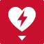
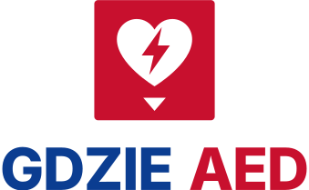

Identyfikacja wizualna akcji zachęcającej dysponentów defibrylatorów do udostępniania danych w portalu dane.gov.pl.

Znak GdzieAED to kwadratowa tablica – jak oznakowanie, którego szukamy wzrokiem w budynkach i na ulicach. Serce z błyskawicą to powszechnie rozpoznawany symbol defibrylacji, a strzałka pod nim mówi po prostu „tu jest”. Nazwa zapisana w dwóch wierszach – GDZIE / AED – to pytanie, które zadaje każdy świadek nagłego zatrzymania krążenia; znak jest na nie odpowiedzią. Czerwień ratownicza i szpitalny granat budują skojarzenie z ochroną zdrowia i instytucjami publicznymi, a geometryczna forma zapewnia czytelność od naklejki na drzwiach po ikonę w telefonie.
Hasło: „GdzieAED? Każda minuta się liczy.” · Wezwanie do dysponentów: „Pokaż, gdzie jest Twój AED.” · Hashtag: #GdzieAED

← tablica = oznakowanie ← serce + błyskawicaWersja podstawowa pozioma – stosowana zawsze, gdy to możliwe

Wersja pionowa – formaty wąskie i kwadratowe
Negatyw – na granacie lub czerwieni
Monochromatyczna
Sygnet / ikona
Proporcje użycia: biel ok. 70%, granat ok. 20%, czerwień ok. 10%. Granat i czerwień na bieli spełniają kontrast WCAG 2.2 AA (≥ 4,5:1). Wartości CMYK i Pantone są przybliżone – przy druku należy wykonać proof.
x = ¼ wysokości tablicy (sygnetu). Pole ochronne o szerokości 2x (połowa wysokości tablicy) z każdej strony musi być wolne od tekstu, grafik i krawędzi formatu. Na schemacie zakreskowano pole ochronne.
| Wersja | Druk | Ekran |
|---|---|---|
| Pozioma | 28 mm szer. | 130 px szer. |
| Pionowa | 18 mm szer. | 80 px szer. |
| Sygnet | 6 mm | 16 px |
Poglądowo w skali 1:1 (druk). Poniżej minimum napis traci czytelność – użyj samego sygnetu.
Nie rozciągaj i nie zmieniaj proporcji
Nie zmieniaj kolorów
Nie obracaj
Nie dodawaj cieni ani efektów
Nie umieszczaj na niejednolitym tle
Nie zmieniaj kroju pisma
Nie zaokrąglaj tablicy i nie zamykaj jej w kole
Nie zmieniaj układu elementów
Aa Ąą Żż
Inter (SIL Open Font License) – krój logotypu i komunikacji. Logotyp: ExtraBold 800, wersaliki. Nagłówki: ExtraBold 800, tekst: Regular 400 / SemiBold 600.
Krój bezszeryfowy o wysokiej czytelności na ekranach i w małych rozmiarach, z pełnym zestawem polskich znaków diakrytycznych.
Masz defibrylator?
Pokaż, gdzie jest.
Udostępnij dane na dane.gov.pl – każda minuta się liczy.
TU JEST AED
Ten defibrylator jest widoczny w otwartych danych dane.gov.pl · #GdzieAED